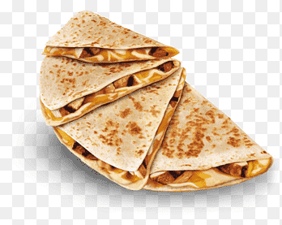

How To Make A Quesadilla

Ingredients
A quesadilla is a Mexican dish that consists of a tortilla
filled with cheese (and often other ingredients, such as
meat and veggies). It’s cooked on a griddle or stove. Full
quesadillas feature cheese sandwiched between two flat
tortillas. Half quesadillas, like the one in this recipe,
is a single tortilla that has been topped with fillings and
folded into a half moon shape.
- Chicken: Of course, you’ll need chicken! This recipe calls for a pound of diced boneless, skinless chicken breasts.
- Seasonings: Use store-bought fajita seasoning or make your own spice blend at home.
- Vegetables: You’ll need green bell peppers, red bell peppers, and an onion.
- Tortillas: For 10 chicken quesadillas, you’ll need 10 flour tortillas. Use store-bought or homemade tortillas.
- Cheese: A blend of shredded Cheddar and shredded Monterey Jack takes the quesadillas up a notch.
- Bacon: Bacon bits lend a burst of savory, meaty texture to the cheesy chicken quesadilla filling. For a more traditional dish, you can easily omit the bacon bits.
How to Make Quesadilla Step-By-Step
Here’s a brief overview of what you can expect when you make restaurant-worthy chicken quesadillas at home:
- Season the chicken, then broil it until it’s cooked through.
- Cook the vegetables with the broiled chicken.
- Layer the mixture onto half of the tortilla, then top with cheese and bacon.
- Fold the tortillas and bake until the cheese is melted.
- Cut the quesadillas into wedges.